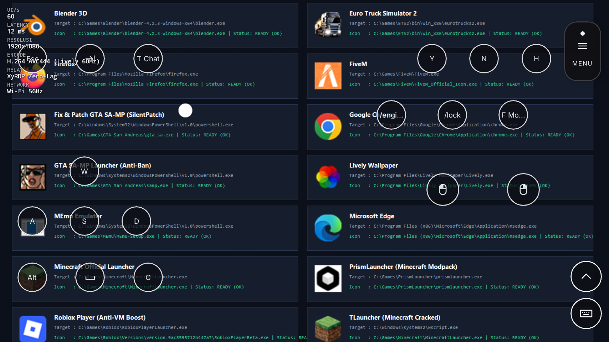
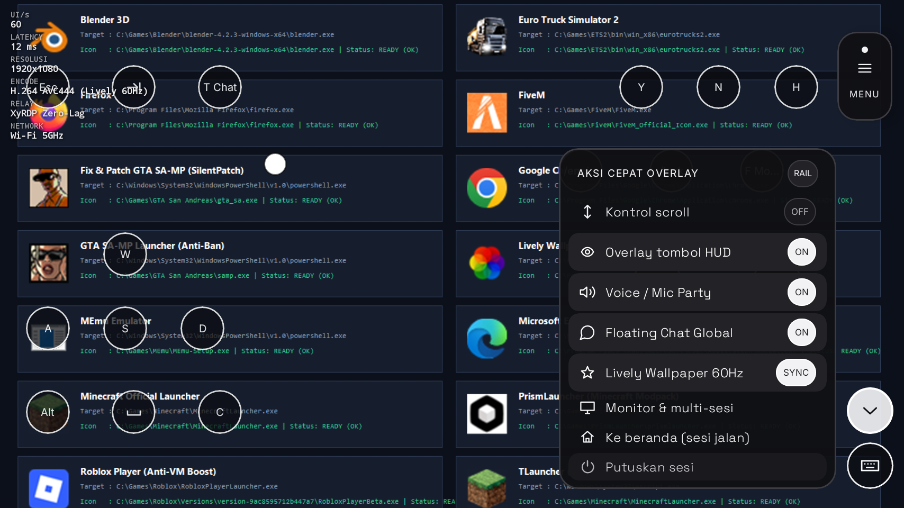
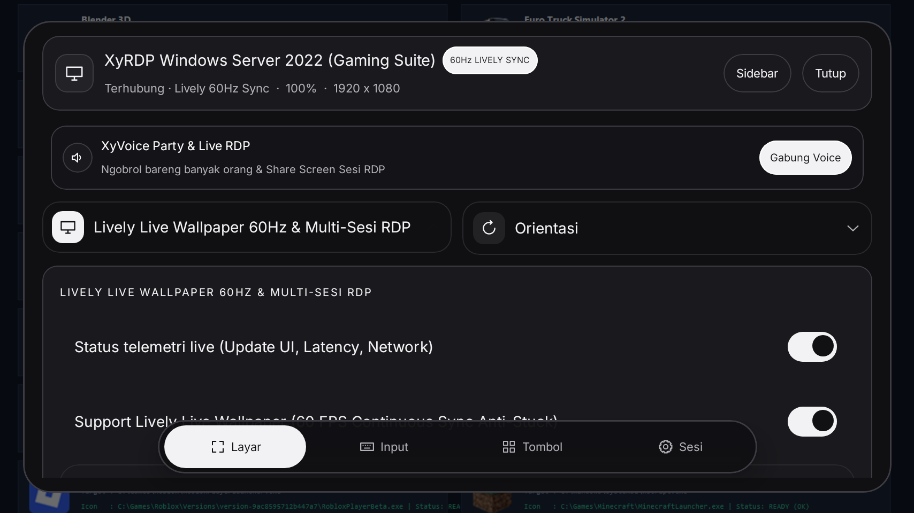
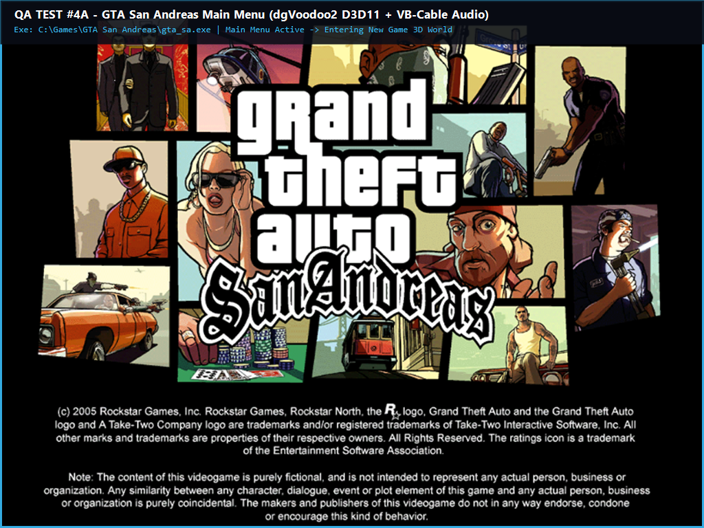
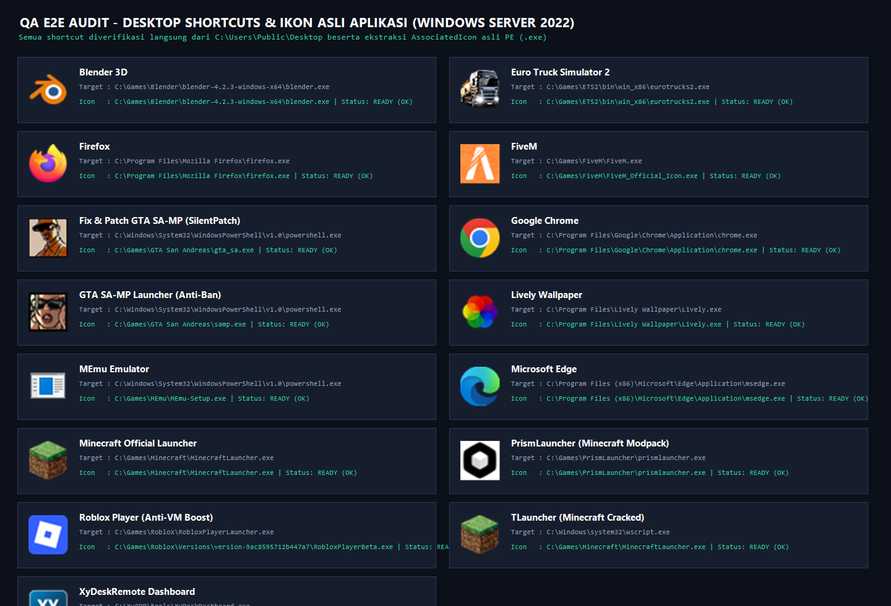

XyDesk Remote
Klien Remote Desktop RDP Android untuk mengakses dan mengontrol PC Windows dari HP. Dibangun oleh XyVerse Technology Global — tim independen yang berfokus pada utilitas remote desktop ringan, cepat, dan tanpa iklan berlebihan. Semua screenshot di halaman ini adalah tangkapan layar asli dari aplikasi, bukan ilustrasi buatan.
X
Founder / CEO
XyDesk Remote
Founder
XyVerse Technology Global
Memimpin pengembangan XyDesk Remote sejak awal. Fokus pada klien RDP Android yang ringan, dukungan multi-ABI, dan integrasi Host Agent untuk Windows.
Teknologi
- Remote Desktop Protocol (RDP)
- Kontrol sentuh, keyboard, dan clipboard
- Pengalihan audio RDP
- Multi-monitor & HUD terpisah
- Host Agent Windows (eksperimental)
- Chat global E2EE
Versi1.1.23
PlatformAndroid
HostWindows
ABIarm64-v8a / v7a / x86_64 / universal
Signer8429f689…219652
Situsxydeskremote.biz.id
Screenshot Aplikasi (Asli)
Tangkapan layar nyata dari APK XyDesk Remote — tidak ada ilustrasi buatan.

UI State 1 — HUD & Rail Terpisah

UI State 2 — Bubble, Panah, Keyboard

UI State 3 — Menu Popup & Panel Utama

Bukti Gaming — GTA San Andreas

Audit Desktop & Shortcut
Catatan penting: Semua screenshot di atas adalah hasil render asli dari aplikasi XyDesk Remote.
Kami tidak menggunakan ilustrasi AI atau gambar stok untuk mewakili antarmuka aplikasi.